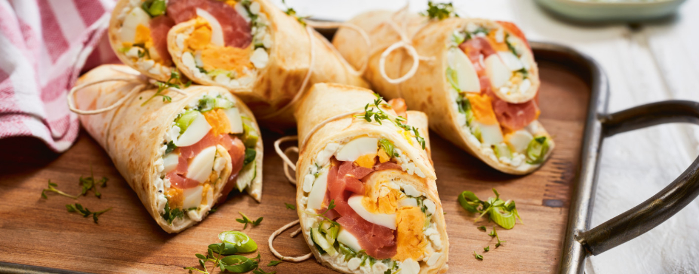

Ein Wrap (von englisch to wrap = „wickeln“, „einhüllen“) ist ein dünnes, mit einer Füllung zu einer Rolle gewickeltes Fladenbrot. Ursprung ist die Tex-Mex-Küche, weshalb als Hülle häufig Tortillas verwendet werden. Seit den 1990er Jahren sind Wraps auch in Europa als Fastfood bzw. Fingerfood populär geworden.
In der orientalischen Küche haben sich mit Dürüm Döner oder Schawarma ähnliche Speisen entwickelt. Auch deren Namen leiten sich von der Zubereitungsform des Einwickelns oder -rollens ab. Ein Rezept für Dürüm Döner findest du hier.
Dieser spezielle Wrap mit Lachs, Kresse und Ei ist besonders gesund und dank der Zutaten äußerst kalorienarm, macht deshalb aber nicht weniger satt. Mit fertigen Wraps oder Tortillas aus dem Supermarkt ist dieses Rezept im Handumdrehen fertig und gelingt so gut wie immer.
